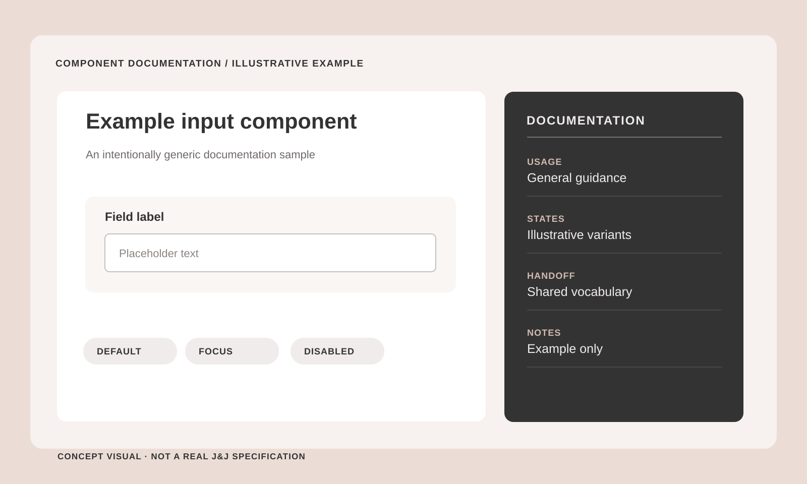
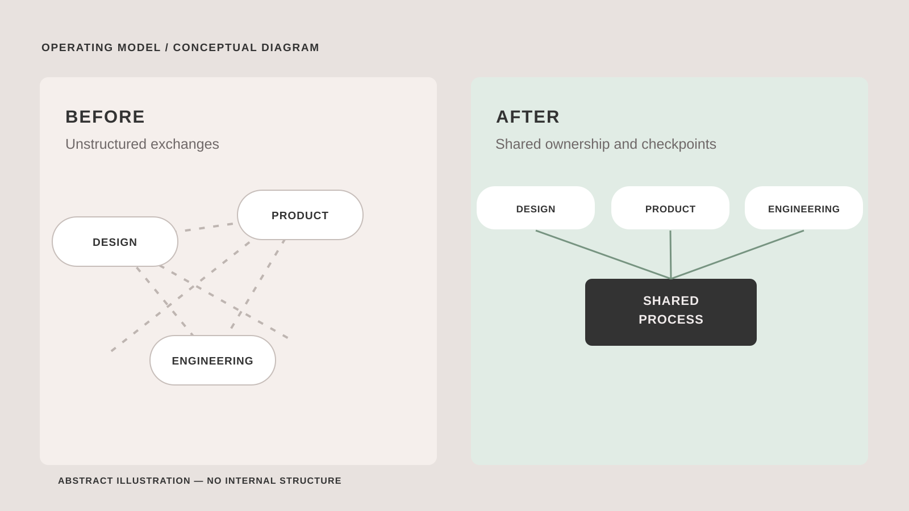
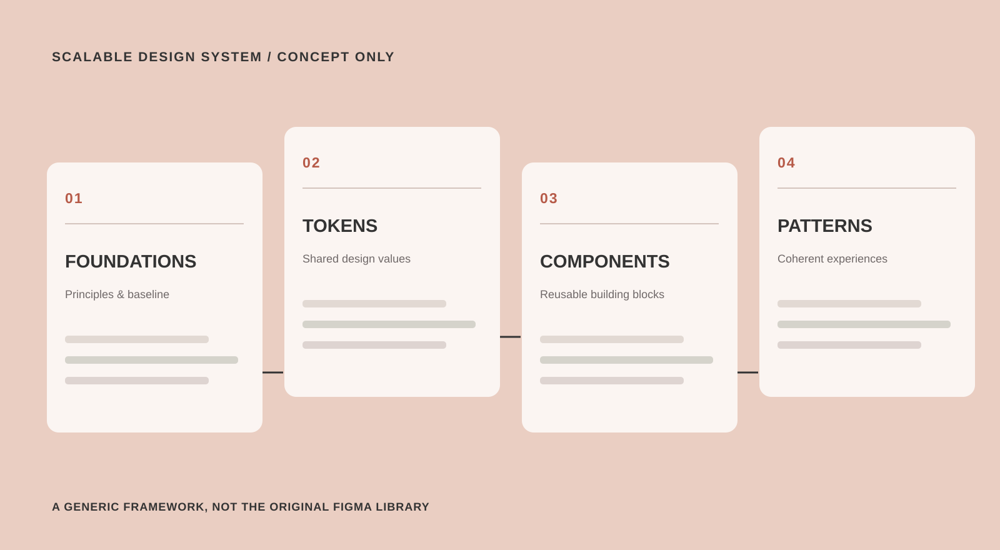
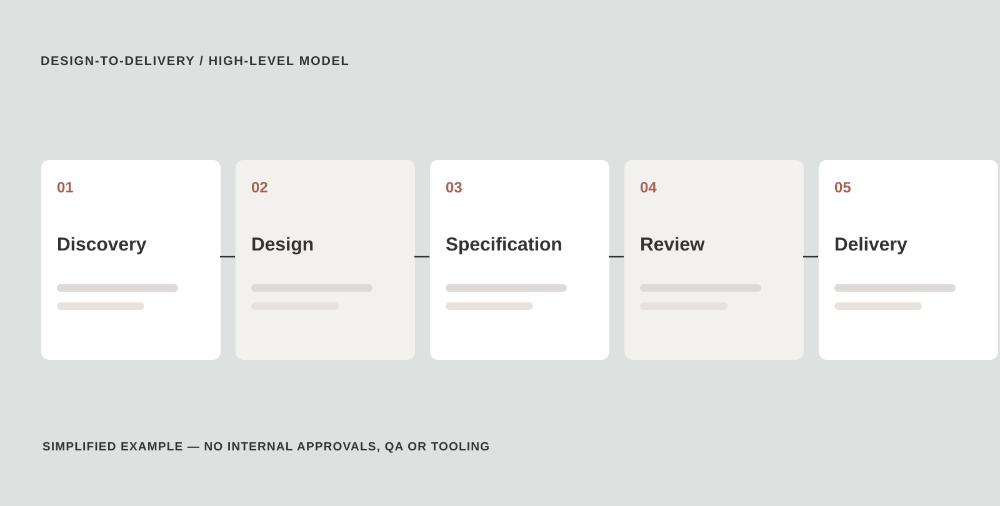
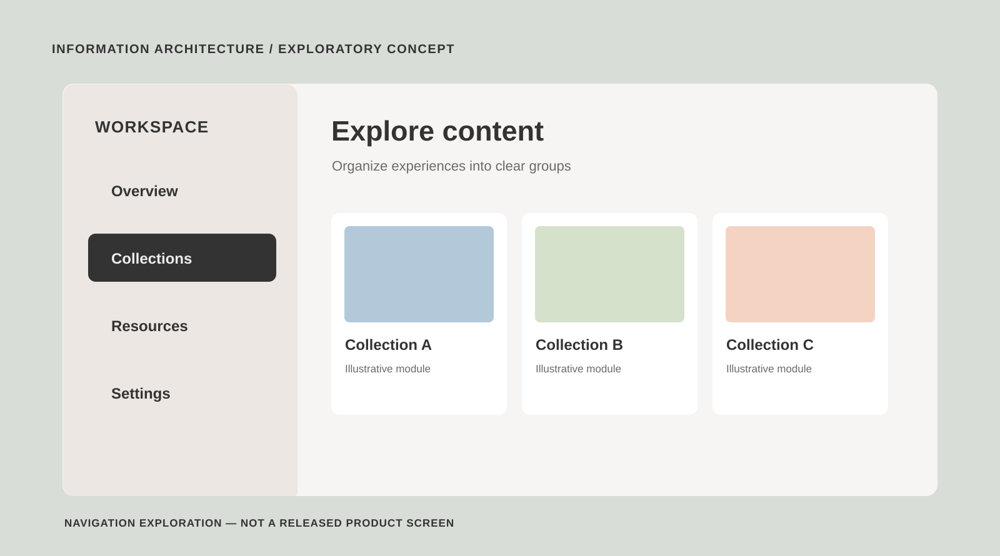

Johnson & Johnson
Connected surgery, designed as a system.
SCROLL TO EXPLOREBringing clarity to a complex digital surgery ecosystem.
My contribution focused on design-team coordination, reusable design practices and a more understandable path from product decisions to implementation.
- Project
- Johnson & Johnson
- Role / disciplines
- Design leadership / Design systems
Public case study. Illustrations are original, conceptual examples—not real product screens, internal specifications or measured performance results.
Before scaling interfaces, we needed to scale clarity
The product needed a shared delivery model as much as it needed a visual language.
One ecosystem. Many moving parts.
Design decisions needed to stay coherent across a complex digital surgery ecosystem.

The work involved an evolving prototype, multiple evolving component libraries and changing requirements. I partnered with design, product and engineering colleagues to connect design priorities with a clearer shared way of working.
Create a plan before asking for speed
A shared delivery approach helps teams navigate complex product work.

I mapped high-level responsibilities and key user journeys, reviewed existing design assets and helped establish clearer points of ownership and communication. The diagram illustrates a general before-and-after model, not the project’s internal organization.
A design system is an operating model.
Beyond reusable UI, a system needs shared ownership and a path toward improving implementation consistency.

I contributed to a component review, the organization of reusable design foundations and alignment with engineering partners. The four-layer illustration is a generic conceptual model rather than the architecture of internal libraries.
A shared design language creates a foundation for more consistent experiences.
Make implementation quality visible
Clear documentation helps decisions travel from design to delivery.

I worked on documentation principles that make component behavior, design intent and changes easier to communicate across disciplines. The simplified flow illustrates a general handoff journey without revealing actual internal processes or QA procedures.
Make room for the next product area.
Exploring navigation models as the information architecture grows.

I explored content grouping with card sorting and developed a collapsible navigation concept to balance discoverability, screen space and potential expansion. This was design exploration; the illustration does not represent a shipped feature.
A platform scales when decisions become repeatable.
Qualitative contributions from the design work—not audited metrics or claims about clinical impact.
Shared components
A clearer foundation for reusable components and a common design language across related experiences.
Documentation practices
More deliberate documentation of design intent and reusable component behavior.
Design-to-development handoff
A more consistent framework for discussing decisions and passing design work into implementation.